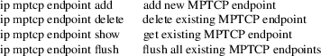
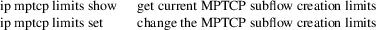

ip-mptcp − MPTCP path manager configuration
ip [ OPTIONS ] mptcp { endpoint | limits | help }
ip mptcp endpoint add IFADDR [ port PORT ] [ dev IFNAME ] [ id ID ] [ FLAG-LIST ]
ip mptcp endpoint delete id ID [ IFADDR ]
ip mptcp endpoint change [ id ID ] [ IFADDR ] [ port PORT ] CHANGE-OPT
ip mptcp endpoint show [ id ID ]
ip mptcp endpoint flush
FLAG-LIST := [ FLAG-LIST ] FLAG
FLAG := [ signal | subflow | backup | fullmesh ]
CHANGE-OPT := [ backup | nobackup | fullmesh | nofullmesh ]
ip mptcp limits set [ subflow SUBFLOW_NR ] [ add_addr_accepted ADD_ADDR_ACCEPTED_NR ]
ip mptcp limits show
ip mptcp monitor
MPTCP is a transport protocol built on top of TCP that allows TCP connections to use multiple paths to maximize resource usage and increase redundancy. The ip-mptcp sub-commands allow configuring several aspects of the MPTCP path manager, which is in charge of subflows creation:
The endpoint object specifies the IP addresses that will be used and/or announced for additional subflows:

|
IFADDR |
An IPv4 or IPv6 address. When used with the delete id operation, an IFADDR is only included when the ID is 0. | ||
|
PORT |
When a port number is specified, incoming MPTCP subflows for already established MPTCP sockets will be accepted on the specified port, regardless the original listener port accepting the first MPTCP subflow and/or this peer being actually on the client side. | ||
|
ID |
is a unique numeric identifier for the given endpoint | ||
|
signal |
The endpoint will be announced/signaled to each peer via an MPTCP ADD_ADDR sub-option. Upon reception of an ADD_ADDR sub-option, the peer can try to create additional subflows, see ADD_ADDR_ACCEPTED_NR. |
subflow
If additional subflow creation is allowed by the MPTCP limits, the MPTCP path manager will try to create an additional subflow using this endpoint as the source address after the MPTCP connection is established.
|
backup |
If this is a subflow endpoint, the subflows created using this endpoint will have the backup flag set during the connection process. This flag instructs the peer to only send data on a given subflow when all non-backup subflows are unavailable. This does not affect outgoing data, where subflow priority is determined by the backup/non-backup flag received from the peer |
fullmesh
If this is a subflow endpoint and additional subflow creation is allowed by the MPTCP limits, the MPTCP path manager will try to create an additional subflow for each known peer address, using this endpoint as the source address. This will occur after the MPTCP connection is established. If the peer did not announce any additional addresses using the MPTCP ADD_ADDR sub-option, this will behave the same as a plain subflow endpoint. When the peer does announce addresses, each received ADD_ADDR sub-option will trigger creation of an additional subflow to generate a full mesh topology.
The limits object specifies the constraints for subflow creations:

SUBFLOW_NR
specifies the maximum number of additional subflows allowed for each MPTCP connection. Additional subflows can be created due to: incoming accepted ADD_ADDR sub-option, local subflow endpoints, additional subflows started by the peer.
ADD_ADDR_ACCEPTED_NR
specifies the maximum number of incoming ADD_ADDR sub-options accepted for each MPTCP connection. After receiving the specified number of ADD_ADDR sub-options, any other incoming one will be ignored for the MPTCP connection lifetime. When an ADD_ADDR sub-option is accepted and there are no local fullmesh endpoints, the MPTCP path manager will try to create a new subflow using the address in the ADD_ADDR sub-option as the destination address and a source address determined using local routing resolution When fullmesh endpoints are available, the MPTCP path manager will try to create new subflows using each fullmesh endpoint as a source address and the peer’s ADD_ADDR address as the destination. In both cases the SUBFLOW_NR limit is enforced.
monitor displays creation and deletion of MPTCP connections as well as addition or removal of remote addresses and subflows.
Original Manpage by Paolo Abeni <pabeni@redhat.com>